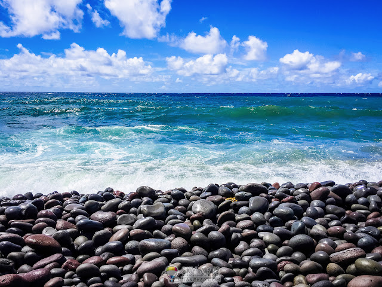
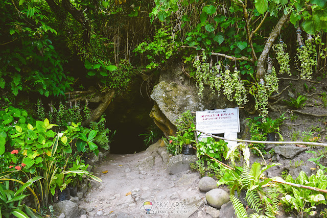
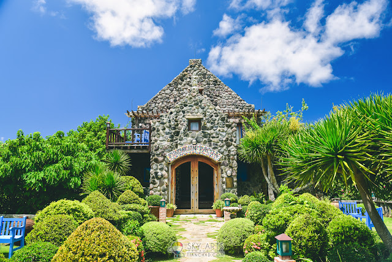
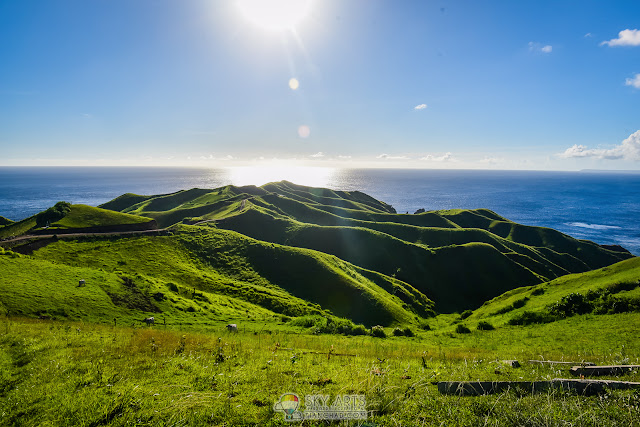
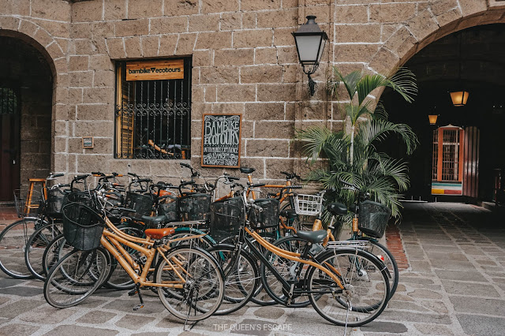
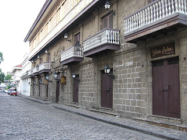
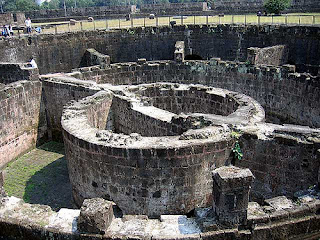

Batanes, called the Home of the Winds, is considered the smallest province in the Philippines with only 230 kilometers of total land area. Part of Batanes’ charm comes from its somewhat seclusion from its busier and more crowded neighboring provinces. Batanes’ refreshingly chill and peaceful vibe gives local and foreign travelers a different taste of island life. One that is simpler, laidback, quiet, but definitely revitalizing.For a country that is known for its tropical islands, Batanes’ rock formations, quaint lighthouses, and wild horses that roam freely in vast pastureland make it a truly unique destination for many people.




Diura Lighthouse
Boulder Beach
Dipnay Tunnel
Fundacion Pacita
Rolling Hills
Intramuros
Intramuros, located along the southern bank of the Pasig River, was built by the Spaniards in the 16th century and is the oldest district of the city of Manila, the capital of the Philippines. Its name, in Latin, intramuros, literally "within the walls", meaning within the wall enclosure of the city/fortress, also describes its structure as it is surrounded by thick, high walls and moats.



Fort Santiago
Manila Cathedral
BamBike
Bahay Na Bato
Ruins of Balluarte de San Diego
Cagsawa Ruins of Ablay
Situated in Albay, Cagsawa Ruins is a historical landmark that serves as the centerpiece of the Cagsawa Ruins Park where tourists can enjoy the scenic view of Mayon Volcano. The ruins also stood as an image of Bicol region’s magnificent landscape for almost two centuries. It symbolizes Bicol’s rich history together with the strength and flexibility of the people towards calamities and ravages of Mother Nature. The Cagsawa Ruins Park is now one of the most popular tourist destinations in Albay province. It is also the site of the Cagsawa Branch of the National Museum of the Philippines. This museum contains photographs of the volcanic eruptions of Mount Mayon as well as other geological and archeological exhibits.